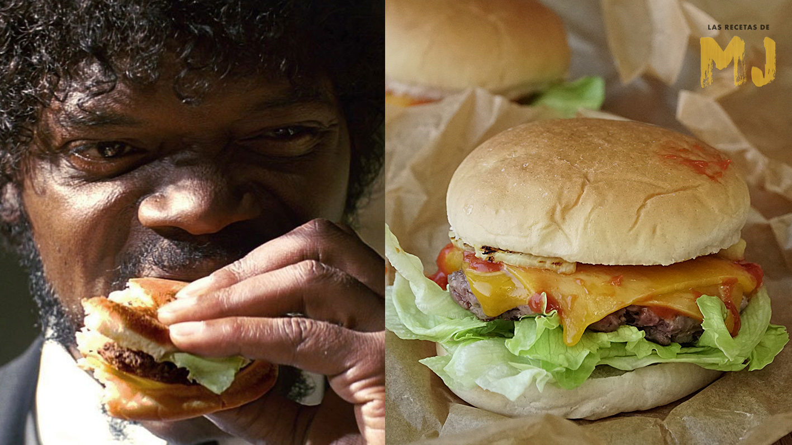

Big Kahuna

Info:
Prep Time: 15 minutes
Cook Time: 10 minutes
Level of Difficulty: Easy
Serving Size: 4
Description:
If memorable enough, food can function as a movie's main character. In Quentin Tarantino's Pulp Fiction there is the classic conversation
devoted to the name given a Quarter Pounder with cheese in France, the Royale with Cheese. And who can forget Samuel L. Jackson's harassment
of Brett and his friends and the corresponding line “Mmm…this IS a tasty burger.” His salivating inflection alone makes one want to find a
fast food joint stat. While watching this movie again it occurred to me that I wished I could have my very own Big Kahuna Burger.
Now you can too!
Ingredients:
Burger
1 pound ground beef or bison
2 tablespoons teriyaki sauce
1 tablespoon grill seasoning
4 pineapple rings (canned or fresh)
4 pieces bacon, cooked until crisp
4 slices monterey jack cheese
Spicy Cilantro Mayo
1 teaspoon Sriracha or chili sauce
1 tablespoon cilantro, finely chopped
Steps:
Using your hands, gently mix the ground meat with the teriyaki and grill seasoning in a medium bowl.
Be careful not to overwork the mixture as that can toughen the meat. Divide into four quarter-pound patties.
Grill pineapple slices for approx 1 minute on each side on your grill of choice.
Cook burgers until desired doneness on a grill of choice: gas, charcoal or even one from George Foreman's empire all work well.
Place a piece of bacon on each and then top with a piece of jack cheese to hinge the bacon in place.
Top with a grilled pineapple slice and serve on Kaiser rolls spread with Spicy Cilantro Mayo.
Mix all together in a small bowl and use as condiment on Big Kahuna Burgers.